狂战士（Berserker）
定位：前排、承伤、反打。他越能吃伤害，越能把狂怒转成嘲讽、反击和近战压制力。
前排承伤狂怒简单
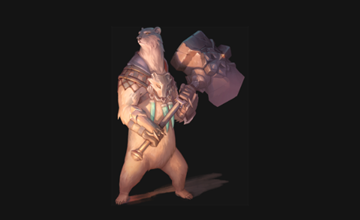
被动技能
守护者之怒
狂战士在受伤后获得狂怒。狂怒让他兼具增伤与减伤收益，因此越站在前排、越主动吃怪物火力，越能把被动价值转成回合内的压制能力。
专属机制
狂战士围绕“承伤换收益”运作。你往往希望他主动吸引攻击，再用嘲讽、击杀奖励和反击效果把前排压力重新转成主动进攻。他的卡牌效果单纯，数值容错也高，对新手友好。
技能清单与详细描述
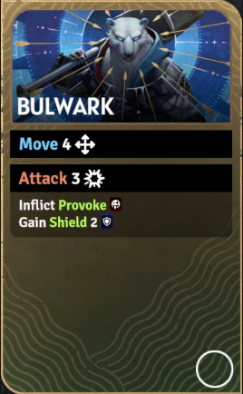
技能卡牌图壁垒（Bulwark）
技能消耗：无
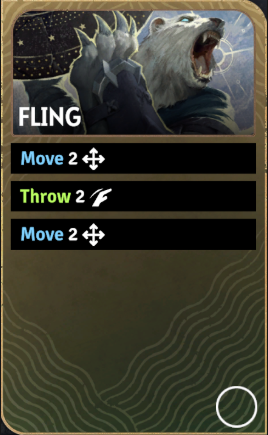
技能卡牌图猛掷（Fling）
技能消耗：无
移动 2。
投掷 2。
再移动 2。
可把单位扔到坑位完成即死。
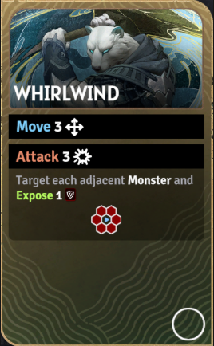
技能卡牌图旋风斩（Whirlwind）
技能消耗：无
移动 3。
攻击 3（所有相邻格范围效果）。
对每个相邻怪物额外附加易伤 1。
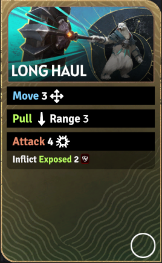
技能卡牌图长途拖拽（Long Haul）
技能消耗：无
移动 3。
拉拽（射程 3）。
攻击 4。
附加易伤 2。
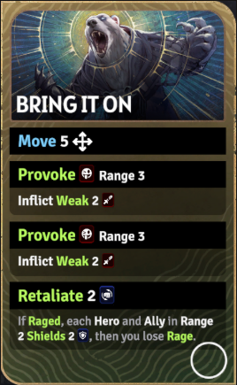
技能卡牌图尽管放马过来（Bring It On）
技能消耗：无
移动 5。
两次嘲讽（射程 3）。
每次嘲讽各自附加虚弱 2。
获得反击 2。
若此时处于狂怒状态，则射程 2 内每个英雄 / 友军获得护盾 2。
随后失去狂怒。
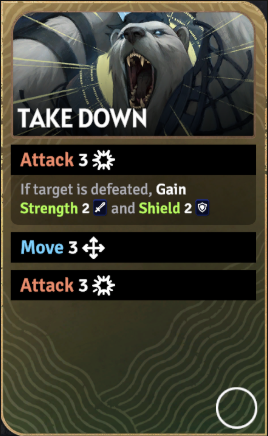
技能卡牌图处决打击（Take Down）
技能消耗：无
攻击 3。
若击败目标，则获得力量 2 和护盾 2。
再移动 3。
再攻击 3。
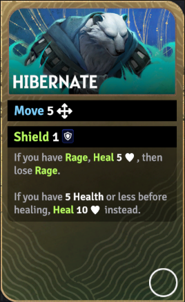
技能卡牌图冬眠（Hibernate）
技能消耗：无
移动 5。
获得护盾 1。
若你有狂怒，则回复 5 点生命并失去狂怒。
若回复前生命不高于 5，则改为回复 10 点。
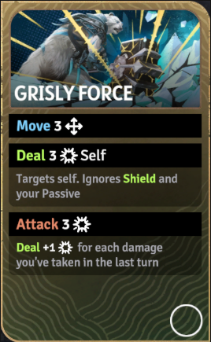
技能卡牌图狰狞之力（Grisly Force）
技能消耗：无
移动 3。
对自己造成 3 点伤害（无视护盾和被动）。
然后攻击 3。
按你上一回合受到的伤害量追加伤害。
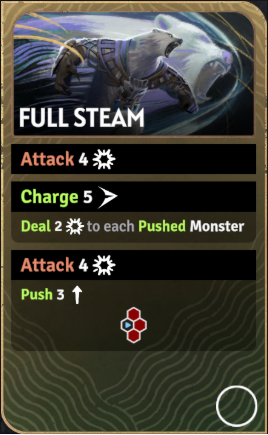
技能卡牌图全速推进（Full Steam）
技能消耗：无
攻击 4。
冲锋 5。
对每个被推移的怪物造成 2 点伤害。
再进行一次攻击 4（连相邻格范围效果）。
附带推移 3。
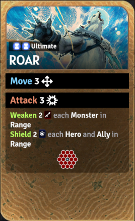
技能卡牌图终极技·怒吼（Roar）
技能消耗：无
移动 3。
攻击 3 / 4 / 5（3 格内范围效果）。
范围内每个怪物受到虚弱 2 / 3 / 4。
范围内每个英雄 / 友军获得护盾 2 / 3 / 4。
来源：?a href="https://sunderfolk.siteswiki.org/heroes/berserker">狂战士页面（Berserker）。
推荐技能组
前排承伤方向
推荐理由：先用壁垒进场并嘲讽，再通过尽管放马过来稳固仇恨和反击收益，最后用旋风斩把贴身怪群一口气压血并挂易伤。
位移处决方向
推荐理由：先把关键目标从后排拽出，再根据地形决定是猛掷进坑还是扔到己方火力区，最后用处决打击完成斩杀并拿到后续收益。
续航反打方向
推荐理由：这一组偏中后期续航反打，冬眠先保证血量安全，狰狞之力把承伤转成输出，全速推进则负责重新破阵和扩大前排压力。